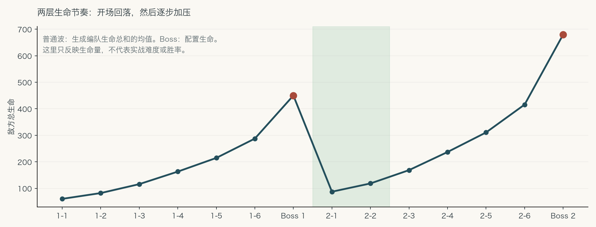
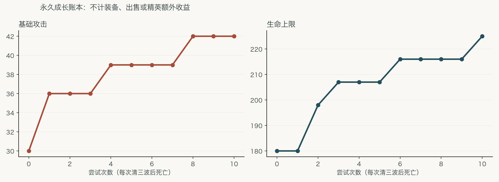

Design proposal / prototype
带着战利品回来，
带着成长再次出发。
两层弹射搜打撤原型。战斗、摸箱、商人和加工交替推进；Boss收尾。失败失去随身装备，金币、经验与永久培养留下。
2 × 6两层，每层六波小怪＋Boss
14 / 11基础物品 / 改版天赋节点
6 / 6怪物行为 / 房间模板
50格子附魔；免费二选一，付费重抽
这是设计稿、配置和可重跑算法参考。新参数已做离线检查；真实战斗、UI、存档崩溃恢复和玩家心流还需要在实现后验证。原始表格和游戏代码未修改。
Pacing and progression
先让装备发挥，再把压力抬起来

普通波取生成样本的总HP均值，Boss取配置HP；这不是实战难度或胜率。绿色区是第二层开场缓和段。
每次仅通过前三波后死亡，保留45金币与90经验，按明确策略升级力量/体质。没有计入装备、出售或精英额外收益；证明经济可达性，不承诺必然通关。Configuration overview
初始测试参数
完整参数以03_数值与配置中的JSON为准。这里是读取JSON生成的便览。
| 波次 | 预算 | HP倍率 | 攻击倍率 | 金币 | 经验 |
|---|
| 1 | 4 | 0.8 | 0.8 | 12 | 25 |
| 2 | 5 | 0.9 | 0.85 | 15 | 30 |
| 3 | 6 | 1 | 0.92 | 18 | 35 |
| 4 | 7.5 | 1.1 | 1 | 21 | 45 |
| 5 | 9 | 1.2 | 1.08 | 25 | 55 |
| 6 | 11 | 1.32 | 1.16 | 29 | 70 |
| 物品ID | 名称 | 占行 | 基础购入价 | 来源 |
|---|
| I022 | 旧剑 | 2 | 18 | ROW-e29aacb57649 |
| I113 | 旧匕首 | 1 | 12 | ROW-eaaaf50a6a73 |
| I116 | 旧弓 | 1 | 16 | ROW-2dc879a85692 |
| I058 | 蓄能手斧 | 2 | 26 | ROW-34f002c094f0 |
| I023 | 旧盾 | 2 | 18 | ROW-806808b0598d |
| I027 | 旧鞋 | 2 | 16 | ROW-b915fd7bf9d8 |
| I028 | 旧皮衣 | 2 | 18 | ROW-4eeb3c9079bc |
| I048 | 固甲石 | 2 | 22 | ROW-0cd3c1e04650 |
| I114 | 旧项链 | 1 | 14 | ROW-dceacafaf79c |
| I115 | 旧手套 | 1 | 14 | ROW-2abcdcf64551 |
| I054 | 魔力皮靴 | 2 | 24 | ROW-9c08dfb75572 |
| I057 | 打磨器 | 2 | 22 | ROW-64ff643d3eb7 |
| I106 | 生命药剂 | 1 | 12 | ROW-0bf3ef881ddd |
| I111 | 体力药剂 | 1 | 8 | ROW-96469e1860ce |
| 天赋 | 每级新效果 | 等级上限 | 角色最低等级 |
|---|
| 力量 | +3 基础伤害 | 8 | 1 |
| 体质 | +5% 最大生命 | 8 | 1 |
| 敏捷 | +25 弹射距离 | 4 | 1 |
| 强韧 | +2.5% 伤害减免 | 4 | 2 |
| 博学 | +5% 获得经验 | 4 | 1 |
| 锋芒毕露 | +2.5% 武器暴击率 | 4 | 2 |
| 临阵强固 | +0.5% 最大生命转为回合开始强固 | 4 | 3 |
| 活力 | +0.5% 最大生命转为回合开始治疗 | 4 | 3 |
| 防御姿态 | +7.5% 强固物品充能 | 4 | 3 |
| 猎头 | +5% 精英/Boss伤害 | 4 | 3 |
| 撕裂技巧 | +7.5% 流血物品充能 | 4 | 3 |
格子附魔：免费二选一
服务出现仍走原随机算法，普通出征可能整层没有附魔。遇到节点后，每个选项先按档级权重抽档，再从该档定义中等权抽取；两个选项ID不同。所有50种纳入首版开发范围，当前装备不影响抽选。
| 地牢层 | 普通 | 精良 | 稀有 | 史诗 | 传说 |
|---|
| 1 | 90.0000% | 9.0000% | 0.9000% | 0.0900% | 0.0100% |
| 2 | 85.0024% | 12.7504% | 1.9126% | 0.2869% | 0.0478% |
| 5 | 70.1262% | 21.0379% | 6.3114% | 1.8934% | 0.6311% |
| 10 | 47.1576% | 25.9367% | 14.2652% | 7.8458% | 4.7947% |
上表是每个选项的边际档级概率，不是单节点必得概率。低层所有档级都有机会；跨重抽、跨节点允许重复，没有高阶保底。具体概率是可调整测试值，第三层以后尚未做游戏平衡验证。
| 服务项目 | 当前规则 |
|---|
| 初次领取 | 免费二选一；每节点领取一次，可跳过 |
| 重抽费用 | 10金币 / 20金币 / 40金币；首价是可调测试值 |
| 重抽次数 | 每节点最多3次，替换整组两个选项；领取后关闭重抽 |
| 已有格符文 | 确认后覆盖；同一格只保存一个符文 |
| 跨出征 | Boss成功保留原行，下次继承；死亡/放弃全部清空 |
打开50种完整定义与适配状态。全部启用是开发范围，不等于50种已在游戏中验证通过。
文档 01
01_核心GDD
打开原始文本地牢搜打撤 GDD v0.2（50种格子附魔规则修订）
日期：2026-10-29
状态：可供实现评审的完整提案。用户确认规则已经固定；其余明确数值是第一轮测试值。没有修改游戏代码，没有宣称玩法或通关率已经验证。
1. 这次要做成什么
保留现有单角色弹射战斗、纵向装备搭配和真实物品内容。玩家进入一层地牢，连续清六波怪，逐步得到装备、通过商店和加工形成构筑，最后打Boss。成功带出装备，死亡丢掉全部随身物品，但金币和角色成长永久留下。玩家既能通过瞄准、反弹和装备搭配进步，也能通过重复挑战、升级基础属性减轻操作压力。
prototype：1个角色、2层地牢、每层6场普通/精英战斗+1场Boss、6种普通怪行为模板、6个房间模板、14种基础物品、11个已有天赋的改版节点、全部50种格子附魔E001～E050及其必要消费者/载体依赖。
14基础物品=12件可装备物品+2种消耗品。全50附魔均为首版要求；目标选择、治愈账目、元素身份、投射分裂、回响和随机灌注等未接通能力必须补齐，不能把尚未验证的附魔删掉后当作完成。必要依赖逐项记录，不扩展为整个原装备库；完整原始内容继续作为资料库，不把测试行直接混入。
2. 哪些是用户已经确定的
U01 第一次空手进入；以后可以从保险箱取装备带入。
U02 每波清怪后摸箱、进入商人，再进入下一节点。没有分叉路线地图。
U03 每层5～6波小怪后打Boss；本提案固定为6波，消除实现歧义。
U04 怪物、房间、掉落、商品随机，但必须服从难度与成长节奏。
U05 成功带出所有随身物品；死亡丢失身上及背包物品，包括本来带入的物品。
U06 死亡保留金币、等级、经验、技能点。已解锁/升级天赋和保险箱物品保留。
U07 营地花技能点解锁节点，花金币提升已解锁节点；地牢里不能点天赋。
U08 锻造花金币赌博；失败只降级或降低属性，物品仍能使用。
U09 附魔绑定格子；击败Boss成功回营地后保留，下次出征继续使用。以后任意一次死亡时，所有格子附魔一起清空，包括此前通关继承的附魔。
U10 允许调整现有数值，交付规则、配置、伪代码/参考实现、两层内容、实施与验收清单。
U11 全部50种附魔纳入首版；越高层越容易抽到高档，低层以普通为主但所有高档仍有极小正概率。附魔没有品质保底，完全按当次随机结果。
U12 附魔节点免费二选一、每节点领取一次；领取前可花金币ROLL至多3次，费用逐次翻倍。已有行的“重叠”是确认后覆盖旧符文，同一格仍只有一枚；取消覆盖不消耗免费领取。手机操作方案以后再处理。
本稿工作决定：没有提前安全撤离；主动放弃按死亡处理；关闭游戏是暂停续局，不算死亡。成功Boss后必须回营地，再选择下一层。金币只有一个钱包，营地和地牢都能消费。免费完整洗点仅在营地，避免新手误点形成长期惩罚。附魔ROLL的10/20/40金币与逐层品级权重是可调首轮测试值，用户尚未指定首价和具体百分比。
以上工作决定不是新增的用户确认；用户审阅可直接改，AI施工默认按本稿执行，不能自己再换一套。
3. 玩家实际怎样玩一轮
第一次打开游戏：营地显示空装备栏、空背包、0金币、等级1、0技能点和未解锁天赋。第1层可进入，第2层锁定。玩家不用先买初始武器；基础碰撞攻击本身可以造成30伤害。
进入第1层第1波：房间开阔，2～3只低威胁怪，没有远程、治疗或精英。玩家看一遍瞄准预览，发射，观察伤害和敌人行动。每次有效反弹还会给已装备的充能物品积累进度，但此时装备栏为空。
清完第一波：金币/经验账目已经入账；打开3选1宝箱，其中至少一件是武器。玩家可以比较旧剑、旧匕首或旧弓的触发方式，领取后装上。选择完成才能继续，不计时替玩家关闭。
进入商店：至少有1件武器、1件防御装备、2件随机装备，以及生命药剂、体力药剂。玩家可以卖掉不需要的物品、买装备、整理顺序，或不消费直接离开。界面同屏显示“花完还剩多少金币”和营地天赋价格预览，承认玩家的存钱选择。
第2～3波：引入远程怪及不同反弹地形。玩家开始发现装备位置有用，例如把魔力皮靴放在武器下方，把打磨器紧挨武器上方。首次教学出征在第2波商店后给锻造，第4波商店后给格子附魔；后续普通出征按现有特殊节点算法随机，附魔服务可能一次也不出现，不设第2/4/6波固定附魔或每局三次保障。
锻造：选一件装备，看到成功率85%、花费12金币、成功+1、失败仍为+0，再决定是否下注。后续强化成功率降低、费用提高。高级装备不是必须赌博才能继续。
格子附魔：节点展示两个不同ID的符文，玩家免费选一枚，放到某个完整纵向行。若暂时不想选，可以花金币ROLL重抽两个候选，最多3次，当前测试价10/20/40；重抽可能重复或仍是普通，没有更高品质保证。选完就结束本节点领取和ROLL。
把合适物品的顶部锚点放在符文行，它按该附魔定义获得效果；挪走后解除绑定，符文仍留原行。最多同时保有3行，计入此前通关继承的符文。选已有行会先展示旧/新符文，确认后覆盖，取消不消耗免费领取；满3行时仍可覆盖，不能增加第4行。已花的ROLL费不因取消覆盖或跳过退款。符文不随装备移动，也不能放进保险箱。
抽选先按层数权重抽档，再在该档等权抽定义。低层可极小概率遇到任意高档，跨ROLL和跨节点允许重复，也不排除已安装同ID或多个传说；不会按当前背包自动给最优搭配。全部概率和50条事件合同见附魔模块及enchants.json。
第4～6波：编队预算、单怪生命和攻击逐步提高。精英可能替换一只普通怪，它会占用更多预算，不在一整队之外额外加一只。精英战后的宝箱可以选2件，金币和经验也提高。
Boss前：最后一个商店及特殊节点处理完，获得一次明确的15%最大生命回复，进入Boss预备界面。玩家能检查装备、药剂、金币及附魔，按“挑战Boss”后冻结装备调整。
打过Boss：保留并带回所有随身物品和格子附魔，解锁下一层。结算先展示保住了什么，再进入营地。玩家存下备用装备、出售多余物品、用技能点解锁天赋、用金币升级，然后带当前构筑和保留的符文进入第2层。保留的是行上的符文配置；充能、临时增益和触发计数仍按每战生命周期清除。
第2层开头：怪物本体比第1层开头更强，但数量与总预算回落。上一层攒出的装备立刻有表现机会。之后再逐波提高压力，最后用第二个Boss检验优先级、反弹路线和续航。
如果途中死亡：显示丢失物品清单、已清除的全部格子附魔、保留金币/经验/技能点、可买的升级。此前成功带回的符文也一并清空；主动放弃沿用按死亡处理的规则。没有强制付费复活。清掉装备与附魔带来的加成和监听，再按裸身基础值+永久天赋重建角色；不能把上一局的物品属性偷偷留在角色上。
4. 从Dungeonbound借鉴什么
公开资料支持：长期培养与局内构筑结合、装备格位影响效果、战斗和补给交替、同名合并、多种加工节点。官方不同模式采用不同死亡规则，不能混成一套。[研究附件 S01、S03、S05]
本项目的差别已经明确：战斗要玩家瞄准弹射；失败会损失随身装备和格子附魔，但货币和角色成长留下；每次只打一整层后回营地；格子附魔随成功通关保留，直到死亡清空；锻造失败降级。
我们借鉴的心流结构是设计推论：准备时有目标→前两波验证变强→中段新组合带来选择→后段资源与风险叠加→Boss集中考试→回营地把收益变成下次优势。没有完成原作全流程盲玩，因此不能把这个节奏描述成对原作玩家心理的实测结论。
5. 探索感放在哪里
没有路线分叉，不意味着没有未知。每局的未知来自六件事：房间掩体改变反弹路线；敌人角色组合改变先杀谁；宝箱改变构筑方向；商店出现可补齐的组件；服务节点改变是否下注；精英让风险和奖励同步增加。
每层要有可学习的语言。第1层主要教碰撞、充能、强固、目标优先级；第2层使用相同基础规则，增加远程与卫士/治疗者配合。Boss不随机拼技能，否则玩家上次失败学到的应对方式下次无法应用。
prototype不做迷雾探索地图、钥匙、路线回溯、多人、异步PvP、任务系统、新材料货币、任意两件融合。这些模块会稀释当前的装备风险和成长验证；原始数据中存在的材料/附魔石暂不进入掉落池。
6. 一局节奏目标（待玩家验证）
普通战斗初始目标3～6个玩家回合、约30～90秒；Boss目标6～10回合、约90～180秒。装备强时前两波允许1～2回合结束，不为凑时长加血。
每次宝箱/商店合计目标20～45秒；熟练玩家可快速处理。一次整层约10～18分钟，只是测试目标，不能用脚本等待时间凑达标。
战斗、宝箱、商店沿用同一左右栏，中央内容切换，减少全屏翻页。商店“离开”一直可见。没有消费要求，没有菜单倒计时。
7. 成长曲线与失败价值
难度只读 floorIndex、waveIndex、模板、精英标志。禁止读取玩家攻击力、当前装备总价值、连败次数来暗中补强怪物。
角色等级不直接加战斗属性，也不局内回满血；它给予技能点。实质永久强度由玩家在营地解锁/升级节点获得。属性变化能在出发前看清。
允许重复打低层和失败积累，不对普通重复挑战做收益惩罚。完整通关通过Boss金币、品质保底和新层解锁体现更高价值。主动送死没有额外奖励，但也不剥夺已经杀怪得到的钱和经验。
不能承诺“只要次数够一定通关”：有限天赋上限、操作要求和构筑风险仍存在。目标是用实测证明弱操作玩家在数次失败后，前段通过能力和Boss可承受失误数明显改善。
8. 这版最需要玩家审阅的设计选择
八行装备容量是否足够容纳构筑，又能产生取舍；三选一宝箱是否比全拿更适合频繁奖励；每战必经商店会不会打断战斗；格子只看物品顶部是否直观；营地免费洗点是否保留；失败保留金币会不会让“刷两波就放弃”成为主要玩法。
这些问题都有本稿默认值及测试办法，可以先实现，不能由施工AI留成“自行平衡”。
9. 完成的定义
实施可以先做一条可运行闭环：空手出发→获得物品→购物与服务→打Boss保留装备和符文回营地→存取与升级→继承符文进入第2层；以及死亡→丢装备并清空全部符文、保留成长→重新出发。首版完成还必须逐条实现并验证E001～E050及必要依赖，少数代表效果通过不能替代50条验收。
配置/算法检查通过，只证明规则自洽和生成限制有效。完整战斗验证、真实输入验证、画面验收、盲玩体验，是后续四项独立证据，不能互相替代。
文档 02
02_房间怪物与难度
打开原始文本房间、编队、战斗与难度
数值唯一入口：03_数值与配置/balance.json、monsters.json、rooms.json。
所有公式是本项目提案，不是Dungeonbound隐藏算法。
1. 三个坐标不要混用
floorIndex：玩家选择的地牢层，prototype为1或2。
waveIndex：本层普通战斗序号1～6，Boss单独记boss节点。
turnIndex：一次玩家发射及其后敌人响应的战斗回合。
旧工程run.floor曾表示房间推进，不能直接拿来作为新的地牢层。
2. 固定锯齿骨架
波次 1 2 3 4 5 6
编队预算 4 5 6 7.5 9 11
生命波倍率 0.80 0.90 1.00 1.10 1.20 1.32
攻击波倍率 0.80 0.85 0.92 1.00 1.08 1.16
精英基础概率 0 0 10% 20% 25% 30%
金币总额 12 15 18 21 25 29
经验总额 25 30 35 45 55 70
HP=round(基型HP×1.45^(floorIndex-1)×生命波倍率×精英HP倍率)
Attack=round(基型Attack×1.22^(floorIndex-1)×攻击波倍率×精英Attack倍率)
金币/经验=round(波奖励×1.35^(floorIndex-1)×精英奖励倍率)
正数round统一floor(x+0.5)，禁止Python round与JS Math.round出现跨语言差异。
预算不再乘地牢层倍率。否则怪物数量、生命、攻击三项一起指数增长，第二层会突然挤满屏幕。精英HP×1.6、攻击×1.2、预算成本×1.6，整波金币/经验×1.5；精英不是另外再加一份奖励。
W2-1的HP预算代理=4×0.8×1.45；W1-6=11×1.32，前者约为后者32%。这是开场缓和的算术证据，不是实际难度下降68%的证据。位置、行动频率、护甲和装备会改变实战。
3. 六类怪物
ID 原视觉/数据行 预算 HP Attack 首次波次 角色
M_GRUNT 眼球 2 45 6 1 基础近战
M_FAST 大肠 1.5 30 5 1 脆弱快怪
M_RANGED 结晶 2.5 36 8 2 隔回合远程
M_GUARD 重生傀儡 3 75 8 3 卫士
M_HEALER 水母脑 3 42 4 3 治疗者
M_BRUTE 结晶骑士 4.5 100 12 4 重击怪
行名只确定来源与外观；以上数值及以下AI是新模板。不能又挂原敌人随机技能池、原层成长率或原精英倍率，形成双重加成。
每个敌人行动必须使用现有场景实际移动/投射/碰撞接口，不能把动画与伤害分开伪造。行为默认：
近战：每敌方阶段向英雄移动至多1.5个房间格；接触后攻击1次，不因一次持续接触重复扣血。
快怪：移动至多2格，攻击1次，HP低；速度是移动距离优势，不额外增加回合。
远程：出生时先瞄准；奇数敌方回合显示直线预警，偶数回合沿锁定方向发射一枚可被固体挡住的投射物；射程5格。发射前至少有一整个玩家回合的预警。无视线时移动至多1格到最近有视线空位，不穿墙射击。
卫士：每场开始获得12×层HP倍率的强固值，仅自己；移动1格，接触攻击1次。不提供全队无限减伤，不复活。
治疗者：奇数回合预告、偶数回合给3格内缺血比例最大的另一个敌人恢复10×层HP倍率，不能治疗自己、不能超最大生命；无可治目标时向英雄移动1格并接触攻击。治疗占用本次行动。治疗数不再乘精英/波倍率。
重击怪：循环“靠近并预告→下一敌方阶段重击”，移动1格；重击在锁定的半径0.9格区域造成2×Attack，英雄离开区域则落空；预告回合不同时普攻。每次重击后重新瞄准，不追踪修正已锁定的区域。
所有角色最多每敌方阶段一次伤害动作；不在商店/宝箱继续计时。原有动画如不能表达这个行为，先使用已有可验证动作加预警，不用未实现动作假装有攻击。
4. 编队生成
先按层/波过滤角色，再抽精英标志。最多一只精英、全层最多两次、不能连续两波精英。没有精英保底，避免“随机”实际上每次固定难战。
若有精英，先从非治疗角色中选一个，预留其1.6倍成本，再用剩余预算填普通怪。至少要有一个近战/快怪/卫士/重击怪；最多6只、远程最多2只、治疗最多1只。
第1波只允许近战和快怪。第2波不会出现治疗/卫士。当前没有召唤普通怪；后续引入召唤时，治疗+召唤禁止同队，召唤物不产金和经验。
预算填不满时允许剩余小于最便宜怪成本；达到6只上限或角色组合上限时，也可在剩余预算较多时停止。不为了花完预算临时提高最后一只怪的HP。
几何和编队要一起验证。失败最多重新生成20次；仍失败时用开阔模板和同预算合法近战编队。记录fallback原因；不静默减少奖励或提高强度。
5. 房间随机
先用6个可人工验收的5×7模板。每格256世界单位，与现有房间大格一致；不要把64单位的碰撞细分格当作房间格。模板可以左右镜像，不能任意转90度改变镜头和出生方向。
英雄出生(2,5)，出口(2,0)。敌人在前四行合法空格内无放回抽取，与英雄中心至少2格；不同出生点至少一个房间格间隔。真实演员半径超过默认清隙时必须重新验证。
固体掩体最多2格：开阔、双柱、偏左、偏右、两侧、前排。连续两波不使用相同模板ID（镜像仍算同模板）。
静态检查：所有可走格连通；英雄/敌人不在障碍内；出口可达；角色碰撞体之间及墙之间有足够距离。
运行检查：从真实英雄碰撞体位置采样至少32个发射角，用实际发射距离和碰撞引擎验证至少存在一条合法发射路径；敌方远程预警不覆盖所有合法落点；不能仅靠BFS宣称可玩。
第一版掩体位置不再自由抖动，视觉装饰可在非碰撞层变化。随机摆全部墙体虽更“随机”，但无法保证反弹体验。
6. Boss是固定行为考试
Boss1 守门人·试炼形态：HP450，轻击10，重击22。
循环：第1敌方回合轻击（移动1格后接触才命中）→第2回合朝英雄当前格锁定直线预警→第3回合沿该直线冲锋2格，碰到固体停止、一次命中最多22→重复。
HP首次低于50%时，在完成当前动作后进入阶段2：召唤2只M_FAST，位置沿房间上缘合法空位；只召唤一次，出现时只预警不立即攻击。Boss保持上述循环，不同时再加攻击速度。
目的：玩家学会离开预警线、用边墙反弹和先清掉脆弱干扰。
Boss2 结晶骑士·试炼形态：HP680，轻击13，重击28。
循环：第1回合轻击→第2回合在英雄当前格与它上方1格显示半径0.9格两处预警→第3回合区域爆发（同一英雄同一动作只承受一次28）→第4回合恢复姿态且不造成伤害→重复。
HP首次低于50%时，在当前动作后召唤2只M_RANGED，首回合只瞄准，无击杀收益；不重复召唤。场上总单位最多Boss+2。
目的：测试处理远程干扰与预留安全落点；不给强制命中的百分比斩杀，不要求特定掉落才能破解。
Boss行为计时使用回合而非设备帧率；战斗加速不缩短玩家可思考时间。Boss战没有随机精英技能。Boss没有通用精英HP/Attack倍率，猎头等“精英或首领”伤害加成仍生效。
7. 血量、体力、腐化和空手恢复
新角色以幽冥骑士源行为为基础，源HP150改为180；Attack30、体力100、弹射距离500、反弹上限4保留。
每普通波胜利一次恢复floor(最大HP×8%)和30体力；恢复在胜利状态提交时发生，不因重新打开宝箱/商店重复。Boss前额外一次15%最大HP，不恢复满体力。
每玩家回合开始扣5体力（服从消耗减免），体力最低0；扣除后为0则腐化+2。腐化到100结束冒险。UI显示本回合实际增加值，删除源实现“显示抽一次、实际再抽一次”的偏差。这个简单规则明确覆盖旧首满终极抉择分支。
腐化跨波累计，回营地清零；HP/体力回营地回满；临时护甲、格挡/闪避层、临时增伤、持续伤害、充能进度与物品临时计数在每场战斗结束清零。新一场重新应用“战斗开始”效果；物品耐久/剩余使用次数跨波及回营地保留。
每波6回合消耗30，与战后恢复持平；每波8回合净耗10。这个资源账本说明慢打法不会立即死锁，但仍要测试真实回合数。
8. 向无尽扩展
生成器可接受任意正整数层；参考程序安全范围1～100。每层重复6波与Boss节奏；外观主题和Boss脚本按已有主题轮换，禁止从所有技能里任意拼Boss。
前两层按本稿人工调参。第3层以后只能称“公式演示”，不能直接声称平衡；基础生命/伤害按上述指数提升，但有限物品阶级和天赋会形成明确上限。
正式无尽需要另开一轮设计：每若干层的新装备强度带、受控的新精英词缀、主题增量、软上限和数字表示。不能靠把怪物无限加血就称高级成长曲线。当前在cap外拒绝生成并提示“未开放”，不允许溢出Infinity。
文档 03
03_掉落商店锻造与附魔
打开原始文本掉落、商店、锻造、附魔与永久经济
数字以03_数值与配置为准。本文件说明决策顺序、边界与UI必须表达的内容。
1. 奖励发在什么时候
每波先确定固定金币/经验总额，不通过怪物数量反复生成钱。经验100%按预算成本分摊给本波初始怪；金币floor(总额/2)按成本分摊，余下金币在清波时入账。分摊使用最大余数法，尾数按稳定生成序号打破平局。
精英提高的是整波总额，不让每个怪自行再乘一次。Boss击杀获得100金币/150经验×层奖励倍率；首次通关该层额外40金币，单独记firstClearClaimed，重复击杀没有这40。Boss召唤物无收益。
每次杀怪立即记入本回合pending收益并显示；在完整回合结束、清波或英雄死亡结算时，将该回合全部已发生收益与战斗状态同事务持久提交。死亡保留本回合实际杀怪所得。剩余怪和未达成的清波奖励不补发。商人不能购买“未结算的未来金币”。击杀与清波同一事务不得重复记账。
玩家与Boss同一结算批次死亡：按死亡处理装备、全部格子附魔及通关解锁，已经发生的Boss击杀金币/经验仍保留，但不给成功宝箱、首通奖或下一层解锁。结果界面清楚说明“同归于尽，冒险失败”。
2. 宝箱抽取顺序
正常战斗3选1；精英战3选2；Boss3选2。金币/经验与箱中物品分离，拿空箱不能复制货币。
同一箱内同名定义不重复，不因阶级不同塞三把同名剑。跨箱允许重复，支持合并。各选择是真实物品实例，领取时写instanceId；未选项在确认后销毁。
每次出征第一波必有一件武器。连续3箱全部只展示I阶后，下一箱至少一件II阶可装备物品；保底看展示过的最高阶，不看玩家最终拿了哪件，避免故意不拿好东西来养保底。成功展示II/III阶后计数归零。
Boss至少展示一件II阶武器。精英通过多选一件和更多金币/经验提供收益，不额外叠一套隐藏稀有率。
抽定义：过滤角色、启用状态、地牢层和波次→按武器40/防御25/支持20/消耗品15选类别→类别内按权重选物品→移除本箱已选定义→抽阶级。
类别池为空时在剩余非空类别中重新归一化；保证类为空视为内容配置错误，使用已验收基础武器兜底并记录错误。不能无限重抽。
不是按当前装备自动补最需要的一件。前期用首箱武器、每店武器/防御和稀有保底避免极端坏运；保留“这件要不要围绕它转构筑”的发现。
波次 1 2 3 4 5 6
F1 I/II/III 86/13/1 83/15.5/1.5 80/18/2 77/20.5/2.5 74/23/3 71/25.5/3.5
F2 I/II/III 64/31/5 61/33/6 58/35/7 55/37/8 52/39/9 49/41/10
上表单位是权重，当前每组和100。幸运L限制0～0.5，只把II/III权重乘(1+L)再全部归一化；不是把百分比直接加到稀有率。保底之后重归一化允许阶级。
材料不进入prototype池，“额外材料”属性保留展示但标注本原型未启用，不把它偷偷改成金币加成。未来材料池需独立设计。
3. 阶级、强化和来源品质分开
新实例字段：tier=1～3（I/II/III阶），honing=0～3（锻造强化），sourceLevel/sourceQuality=来源适配需要的原字段。
prototype的tier只额外乘白名单强度[1,1.22,1.48]；honing再乘(1+0.15×honing)。不把tier同时传给原版品质成长又乘一次。
白名单：物品实际造成的伤害值、治疗值、强固数值、明确的固定伤害加成值。黑名单：触发次数、充能门槛、充能次数、事件概率、范围、反弹次数、格挡/闪避层数、耐久、价格、金币/经验生成、相邻范围。
旧皮衣的距离+50不跟着锻造放大；旧鞋的1层闪避也不放大。旧手套的固定+5基础伤害可按实例强度算一次，再作为装备来源加成，卸下要移除。药剂不锻造、不合并、阶级固定I。
临时增长类单独限制：打磨器对同一武器每场累计最多+20；蓄能手斧由灌注得到的临时增伤每场最多+45（均为基础量，阶级/锻造在最终输出处只乘一次）；强度上限是新平衡覆盖。战后清除。
4. 商店
每次进入新商店生成4个装备货位+2种药剂货位，每格库存1件。装备至少一武器、一防御，其余按普通类别池抽；同一页装备定义不重复。固定生命药剂、体力药剂，刷新不补货，不刷新药剂/治疗服务。
装备价格=ceil(base_price×阶级价格因子×(1-折扣))，阶级因子[1,1.7,2.8]，折扣上限20%。所有阶级可卖价=floor(base_price×同一阶级因子×0.3)；强化不提高卖价。药剂卖价再乘剩余次数/最大次数后向下取整，耗空没有回收金。
基础价在items.json中逐件写明：旧匕首12、旧剑18、旧盾18、旧项链14、蓄能手斧26、生命药剂12、体力药剂8等，全部覆盖旧表商店报价，不沿用旧字段“价格=2”来算新经济。
每个商店最多刷新2次，分别8、14金币；仅重抽4件装备。第k次货架使用shop域index=k，刷新已生成的结果随存档保留。退出重进同一商店不重置次数或库存。
每个商店另有一次25%最大生命治疗，10金币；可不购买。商店没有无限回血按钮或利息机制。背包满时可以直接选择装备到合法位置、出售现有物品或取消交易。
购买时依次验证阶段→价格→余额→库存→放置空间，全部通过后一次提交扣款+转移物品+减库存。失败不扣钱。出售是金币交易，不调用旧item.dismantle及其产物事件。
5. 同名合并
在营地/商店/特殊节点的整备状态可进行，战斗禁止。两件同定义、同tier的非消耗装备合成1件tier+1，最多III。收10×输入tier金币，保留两者较高honing。
两个输入实例消耗，输出新instanceId；新实例清空充能、临时buff与触发历史。卖价只看输出tier，不返还输入价格或强化费用。必须先证明输出能放进腾出的栏位/背包再提交。
装备名称相同不等于同定义；生命药剂与新手药剂禁止通过名称合并。任意两件融合不进入prototype。
6. 概率锻造
当前强化等级 成功率 花费 成功 失败
0 85% 12 变+1 仍+0
1 65% 24 变+2 降到+0
2 45% 40 变+3 降到+1
3 不可再锻造
失败不销毁物品、不降tier、不低于+0。每次服务到访最多3次尝试，共享次数，不是每件3次；没有概率保底，没有根据玩家金币改概率。达到+3后按钮禁用。
界面同时显示现在/成功/失败三组数值及金币，点击确认后保存扣款、结果、随机流和计数，再播放动画；关界面或崩溃重开不能撤销已确定结果。
无限次到访条件下，从+0到+1/+2/+3的平均直接锻造费约14.12/58.64/201.95金币；不包含买装备、路途和死亡损失。平均值不能当保底花费，+3的长尾明显。基础通关测试必须用0～1级强化也能完成。
7. 特殊节点出现规则
普通出征每个商店离开后先按基础50%抽签；如果连续两次没有特殊节点，本次强制出现。出现后misses归零。因保底存在，实际长期出现率高于50%，不能显示为“最终概率恰好50%”。
节点类型锻造/附魔等权；同类型连续出现两次后，下一次出现时强制另一类型（中间无节点不打断类型计数）。特殊节点可跳过，不支付门票。
首次教学出征第2波后强制锻造、第4波后强制附魔，其余波照常抽。教学例外写进生成日志，重进同一出征不重新教学。结束该次出征后永久关闭首次教学标志，即使死在第2波之前；以后不保证每局都有两种服务。
普通出征可能没有附魔节点；特殊节点保底不等于附魔保底。不新增第2/4/6波固定附魔排期或每局三次附魔保障，沿用上述生成算法和首次教学例外。
第6波后的商店与特殊节点保留，然后一次性Boss前恢复，进入Boss准备。
8. 格子附魔
8.1 首版定义与格子
全部50种附魔E001～E050纳入首版，唯一机器定义见03_数值与配置/enchants.json；普通18、精良14、稀有9、史诗6、传说3。它们是不同效果定义，不是给同一个效果套五档倍数。旧四种简化符文不再作为另一套首版池并存。
装备栏两基础格宽合并成一个“完整行”。附魔存于行号0～7，同一行只有一枚；不能存到物品身上、右侧背包或保险箱。多行物品只读取最顶部锚点行，覆盖下方其他附魔行不额外生效；UI高亮实际生效行，并在无效覆盖行显示“当前物品锚点不在此行”。两个半格不独立附魔。
最多同时保有3个附魔行，包含此前成功通关后继承的附魔。满3行后可以选择已有行覆盖，不能新增第4行。跨行允许安装相同附魔ID，也不限制全局只能有一枚传说；各条目的能力条件、次数上限和事件防回路仍执行，不新增同ID或传说唯一规则。
8.2 免费二选一与金币重抽
每个附魔节点首次显示两个不同ID的候选，免费选一枚及目标行；每节点最多领取一次，领取本身不收金币。可以直接跳过，不能把未领取次数带到下个节点。
领取前可用金币ROLL重抽并替换整组两个候选，单节点最多3次，不逐个锁定或只换其中一个。费用每次翻倍，首轮可调测试值为10、20、40金币；用户确定的是倍增规则，10金币首价尚非用户指定的固定数值。实际费用由配置读取，不与商店刷新或锻造共用次数。
ROLL只替换屏幕候选，不直接修改任何已有格子。跨ROLL、跨节点可以再次出现同一ID；已安装的ID也不从池中排除。每次新展示内部两个ID仍不同，不因付费而保证更高品级、未见过或更适合当前背包。
选择已有附魔行时，必须展示“旧符文→新符文”覆盖确认；只有确认后才替换，同格不叠两枚。取消覆盖退回选行，不改格子、不消耗免费领取，仍可重新选择、ROLL或离开。此前已支付的ROLL费用不因取消覆盖、跳过或离开退款。
一旦领取提交成功，本节点的免费领取与ROLL同时关闭，不能再领取或继续ROLL。扣币重抽、免费领取、覆盖确认各有独立commandId与候选版本校验，重复点击/重载不双扣、不重抽、不复制领取。
8.3 层数与品级概率
每个候选先抽品级，再在该品级全部定义中等权抽ID；第二个候选独立抽品级，只在该档排除本次第一个ID。所有50种从第1层起都有正概率；不按当前装备、背包或最优搭配过滤，不因已有同ID而避让。
只有地牢层影响品级权重。首轮可调测试公式：factor=1+0.5×(floorIndex-1)；普通至传说的baseWeights=[9000,900,90,9,1]，第i档（i从0开始）权重=baseWeights[i]×factor^i，再归一化。
层数 普通 精良 稀有 史诗 传说
F1 90% 9% 0.9% 0.09% 0.01%
F2 85.00239% 12.75036% 1.91255% 0.28688% 0.04781%
F5 70.12623% 21.03787% 6.31136% 1.89341% 0.63114%
F10 47.15761% 25.93668% 14.26518% 7.84585% 4.79468%
表内为单个候选的近似概率，不是两个选项中至少出现一次的概率；实际计算不先把每项四舍五入。F5/F10用于说明配置曲线，不代表本两层prototype已实测这些关卡。
层数越高，高档附魔总体概率越高；低层以普通为主，但仍有极小概率出史诗和传说。没有附魔品质保底、连败补偿、ROLL品质保底；不叠加波次、幸运属性、战力或购买次数修正。坏运可能连续发生，花完3次ROLL也可能仍是普通。此处不改变装备宝箱既有保底规则，特殊节点出现规则也另按第7节执行。
8.4 事件、能力与实现边界
每种附魔的effect、target、limits及通用规则G05～G15以enchants.json为准。普通数值修饰不能凭空赋予载体原本没有的能力；明确声明的战斗开始强固、固定灌注、格挡后供能等则必须生成其规定的合法事件，不能用“所有符文只修饰数值”将它们删掉。
保留eventId/parentId/rootActionId/sourceInstanceId/origin；同监听器对同eventId只处理一次。附魔可阻止沿自身祖先路径再次触发自己，并执行条目每回合/每场上限；不得用全局“派生事件免疫”吞掉其他装备合法连锁。每回合派生事件256沿用为诊断保护，达到时记录来源链，不能把截断当作玩法平衡。
自然反弹充能、固定灌注、初始充能分别走声明入口；固定灌注不自动乘自然充能速度、阶级或锻造。治愈先完成HP与DOT账目，再判断可用剩余量；回响释放按原能力增加触发次数并保留效果与代价；投射分裂、目标选择、格挡/闪避、强固与持续伤害沿原消费者。任何修饰只在指定取值处应用一次，不重复乘来源强度。
全50定义及其必要消费者/载体都属于首版交付范围。E029目标适配、E035治愈账目、E045投射分裂、E047回响，以及元素身份/原随机灌注等依赖尚未验证时，记录为必须补齐的实施缺口；不能通过删掉这些ID、按玩家背包缩池或替换成数值占位效果来宣称首版完成。只补50条所需依赖，不因此扩展为整个原装备库。
拖动只在非战斗整备状态允许。根据旧/新锚点重新计算绑定；不能靠来回拖动触发战斗开始收益、重置药剂次数或洗充能。战斗中物品与符文位置固定。手机操作方案后续再处理，本轮先固定这些规则与状态合同。
8.5 成功保留与死亡清空
击败Boss并完成成功结算后，全部格子附魔按原行号保留在营地，下次出征继续使用。之后任意一次死亡或按死亡处理的主动放弃，都会清空全部附魔，包括此前通关继承的附魔。符文不跟随物品，也不进入背包或保险箱；移动、出售、存取装备不会转移或清除行上的符文。
营地由ProfileSave.enchantedRows持有符文配置，出发时原子移交RunSave.enchantedRows，成功结算时退回ProfileSave并清空Run端；死亡/放弃同时清空两端，不恢复出发前旧副本。暂停/退出仅续局，不触发清除。每场战斗的临时充能、增益、待用额度与触发计数仍在战后或条目规定时点清空，不能随保留的符文跨战累计。
9. 永久天赋与金币的取舍
升级阈值ceil(60×1.5^(当前等级-1))；prototype上限12，每升1级获得1技能点。封顶后经验条显示MAX，不继续囤不可用经验。解锁11个节点需要11点，允许最终全部解锁。
技能点解锁节点直接获得第1级，后续升级花金币，费用依次30/50/80/120/170/230/300。力量和体质上限8，其他本稿节点上限4。前置必须全部满足，节点等级限制见talents.json。
力量每级+3基础伤害，体质每级+5%最大生命；这是为永久多次成长重新设定，不能沿用原力量每级约+30导致一两次点数翻倍全局。
其他选项覆盖续航、强固、暴击、精英伤害、充能、距离和经验。11个节点都是已有名称/来源行；“胜利果实”依赖精核货币，暂不纳入。
营地可免费全量洗点，退还本存档实际消费的技能点与金币（记购买账目，不能按当前价格倒算退款）。先重置所有节点再退回，不能单独退前置留下后置。营地洗点重新满血无局内收益；禁止地牢洗点。修改价格版本后也按历史实付退款。
金币可以从局内拿来买装备，也可以留给永久升级。我们不强迫两边分币种；用早期低价功能装备、可预期Boss奖励和购买后可感知提升去检验消费价值。
如果测试大多数人始终只卖不买，先调低基础装备价格/提高商品实用性，再调永久费用，不能第一反应没收玩家保留金币。
文档 04
04_状态存档与交互
打开原始文本状态、存档、装备与交互合同
1. 主流程状态机
CAMP → PREPARE → COMBAT → WAVE_SETTLE → CHEST → SHOP → SPECIAL_OR_SKIP → NEXT_WAVE
第6波结束后：SHOP → SPECIAL_OR_SKIP → BOSS_PREPARE → BOSS_COMBAT → VICTORY_LOCK → BOSS_CHEST → VICTORY_SETTLE → CAMP
VICTORY_LOCK在英雄存活且Boss死亡的批次结束时锁定胜利，保存Boss击杀收益；仍保留Run物品容器和格子附魔。处理完Boss宝箱才调用finish_adventure(victory)，统一转移携带物和格子附魔、发首通奖和解锁下一层。胜利锁定后不能主动放弃判负，退出只恢复奖励页。
任意战斗英雄死亡：DEATH_SETTLE → RESULT → CAMP。
主动放弃：ABANDON_SETTLE → RESULT → CAMP。
暂停/退出：保存当前状态，恢复原节点；不创建新出征、不重抽奖励、不补满状态。
每个状态只有定义过的合法命令。按钮禁用只是表现，核心层仍必须拒绝非法命令。
CAMP：仓库存取、营地出售、天赋解锁/升级/洗点、调整装备、合并、选择层、出发。
PREPARE/非战斗整备：拖动/排序/卸装、按所属页面权限合并、使用有剩余次数的药剂；用药不触发敌方回合，不触发充能，资源满时禁用。
COMBAT/BOSS_COMBAT：瞄准、发射、允许时机的消耗品使用、暂停、只读查看；不能拖动、出售、点天赋。
CHEST：选择、领取、整理空间、确认放弃剩余奖励；不允许刷新宝箱。
SHOP：购买、出售、刷新、治疗、合并、整理、离开。
SPECIAL：当前服务、合并、整理、用药、离开。附魔节点开放领取前的金币ROLL和免费二选一；领取成功后不再允许ROLL/领取。不能从锻造页调用附魔命令。合并仅在CAMP/SHOP/SPECIAL三个页面开放，CHEST与BOSS_PREPARE不开放。
2. 存档拆成三个明确对象
ProfileSave
schemaVersion, contentVersion, profileId, revision,
gold, level, xpWithinLevel, skillPoints,
talents[{talentId,rank,skillPointsPaid,goldPaid}],
stashItems[], campCarryItems[], equipmentPlacement[], enchantedRows{rowIndex:runeId},
unlockedFloor, firstClearClaimed[], tutorialAttemptFinished,
activeRunId, appliedEventIds[], updatedAt。
RunSave
runId, profileId, seed, contentVersion, revision,
floorIndex, waveIndex, state, currentRoomId,
hero{hp,stamina,corruption,battleTemporaryState},
items[{instanceId,definitionId,tier,honing,chargesRemaining,placement}],
enchantedRows{rowIndex:runeId},
rngStates{domain:state}, generatedEncounters[], chestOffers[], shopOffers[],
lootLowStreak, specialMisses, lastSpecialType, repeatedSpecialType,
eliteCount, previousWaveElite, pendingRewardIds[], killedEnemyIds[], victoryLocked, bossChestResolved,
shopRefreshCount, shopHealingUsed, forgeAttempts,
enchant_nodes{node_id:{floor,wave,rule_revision,catalog_sha256,offers[2],offer_revision,refresh_count,claimed,claimed_id,claimed_row,rng_state}},
settled, outcome, tutorialRun, bossPreparationRecoveryApplied。
ContentDefinition
使用03目录的稳定定义ID+真实sourceRowId+来源表/行。实例与定义不可混为一谈；两个旧剑有两个instanceId，但共用I022定义。
所有事件ID必须包含runId/nodeId/eventType/localOrdinal；怪物生成ID也包含runId。不要把F1W1E0直接当全账号唯一ID。
3. 所有权和资产账本
营地存放：物品只能属于stash或campCarry中的一个集合；装备布局只是campCarry物品的引用，不另复制一份。
格子附魔独立于物品所有权：营地只由ProfileSave.enchantedRows持有，出征时只由RunSave.enchantedRows持有。键为装备栏行号0～7，每键只映射一个E001～E050定义，最多3行，包含继承的符文；不放入物品实例、背包或保险箱。已有符文行可以在免费领取的覆盖确认中替换，满3行时禁止新增第4行。不同的行允许相同ID，不增加传说唯一限制。
出发时：把本次campCarry中选定物品移交给RunSave。未带入的仍在保险箱/营地安全存放；不可留下同instanceId在两个集合。
同一出发事务把ProfileSave.enchantedRows完整移交RunSave.enchantedRows，并将Profile端设为空；不受带入哪些装备影响，不保留可用于死亡回滚的旧符文副本。
成功返回：RunSave物品转到campCarry，继续保持装备/背包布局；RunSave.enchantedRows按原行号转回ProfileSave.enchantedRows，并清空Run端。保险箱满不影响带出物品或保留符文，玩家以后自行转存物品。
死亡/放弃：RunSave物品销毁，不生成地面可回收尸体，不调用出售/分解，不生成空瓶或材料；campCarry不恢复旧拷贝。ProfileSave.enchantedRows与RunSave.enchantedRows同时清空，包括此前成功通关继承的符文；已提交的死亡/放弃不能因重载恢复出发前旧副本。
每战结束清除该战临时充能、增益、待消费攻击队列与触发计数；战斗结算后符文配置仍保留，直到死亡/放弃事务清空。暂停/退出恢复当前Run，不清符文，也不重新发放战斗开始收益。
金币和经验由Profile统一持有，Run记录当前回合pending。完整回合/清波/死亡批次提交后已经入账，返回营地不再次把“本局收入”加回钱包。
本局收入/支出只是结果页统计，不是另一份可结算货币。
4. 事务和断点恢复
奖励领取、买卖、合并、锻造、附魔ROLL、附魔免费领取/覆盖、出发、死亡、胜利全部执行：
读取当前revision → 校验phase与命令参数 → 检查commandId是否已提交 → 计算新状态及随机结果 → 同一存储事务写入Profile/Run/事件去重 → 更新revision → 播放表现。
IndexedDB建议一个transaction同时写profile/run/events；不要用三次localStorage.setItem伪装原子事务。小型实现可把聚合状态封装成单记录原子写入，但要保留上一有效版本作迁移回退。
扣款后崩溃：恢复已记录结果，不能只扣钱不出物品。重复点击/网络式重试：同commandId返回原结果，不再次掷骰。
出发、成功、死亡/放弃的符文转移或清空与对应物品结算共用原子事务和commandId；重试只返回原结算，不再次复制、清空后回填或恢复旧营地副本。恢复到上一个有效版本只能处理未提交事务或存档迁移失败，不能撤销已提交的死亡。
附魔节点的初始两个候选先保存再展示；offer_revision为0，refresh_count为0，claimed为false。每次合法ROLL检查当前节点、尚未领取、次数<3、余额，再按配置费用扣币，沿节点已保存rng_state抽出并替换整组两个候选，同时保存新rng_state、递增次数与候选版本；同一事务不修改enchantedRows。费用首轮测试值10/20/40，不足金币或已领取的请求不扣钱、不消费随机。
免费领取检查当前候选ID、offer_revision、目标行与3行上限。空行直接提交；已有行先显示覆盖确认，确认时再次核对旧符文与版本，防止把过期预览写入新状态。取消确认退回选行，不扣免费次数、不改符文；已提交ROLL费不退。确认后同事务写入/替换该行并设置claimed、claimed_id、claimed_row；重复确认返回已处理标记并读取已保存结果。
附魔参考接口对已提交commandId返回duplicate已处理标记，由调用方读取已保存节点结果恢复显示；它不保存完整响应收据，但不再次扣费、推进随机或领取。生产层仍需把状态与命令去重记录同事务持久化。
跳过或离开不会退ROLL费用；再次打开同一节点恢复原候选、费用档位和领取状态。已领取节点无法再ROLL或再领；未领取的免费次数不跨节点累计。每次展示两个ID不同，跨版本/节点允许重复；没有附魔品质保底或用于补偿的连低档计数。
进战斗时保存已生成布局、敌人及战前快照。战斗内每个完整回合结束保存，包括击杀奖励的事件ID；不能读战前快照同时保留上一遍打出的金币再发一次。
击杀时只记录本回合pending奖励；回合结束、清波或死亡批次将收益、物品使用、敌人死亡、HP和随机状态一次提交。不能先永久发金币再把战斗快照留在上个回合。
中途崩溃可恢复到最后一个完整回合，未提交的战斗与收益一起回滚；已经提交的命中和奖励不重复。明确提示恢复点，不伪称逐帧恢复。
本地单机不承诺阻止玩家手动修改存档，但正常刷新、退出、重复点击不应产生系统性复制。
5. 随机域隔离
每次创建出征生成新的持久runId和rootSeed；开始出征事务提交后才能使用。内容版本也进种子。
layout控制房间；encounter控制编队/出生点；elite控制精英；loot控制物品；shop控制货架；special控制服务是否出现及类型；enchant_offer控制附魔候选与ROLL；forge控制强化；combat控制战斗随机。
参考实现FNV-1a UTF-8哈希+32位xorshift，所有uint32操作显式截断。移植到TS用Math.imul/>>>0。随机整数用拒绝采样，禁止简单取模带入偏差。
生成键：version|seed|runId|floor|wave|domain|index。刷新次数是shop index；附魔enchant_offer域仅在节点首次建立时使用rule_revision+'/'+node_id派生起始流，生成候选后保存rng_state。随后三次ROLL沿节点已保存状态推进，offer_revision与refresh_count从0递增到3，不重新派生流。同节点恢复读取已有offer与rng_state，不重新抽选；附魔重抽不影响特殊节点排布、下个宝箱或锻造。战斗/锻造连续抽取也必须保存当前随机state，不能每次按钮点击重置到同种子首数。
宝箱保底、特殊节点计数、精英上限也要保存；种子相同但计数丢失仍然会漂移。音效、粒子、闲置动画使用独立视觉随机，不消耗上述域。
6. 装备栏和空间
保留已确认的纵向排序。每件物品横跨两个基础格，宽度恒为整栏；按源占格高度占1/2/3行，不能把原模型几何高度当UI行数。
装备初始8行、背包12行、保险箱40行；第一版不做扩容，以便先验证空间压力。滚动只改变可见区域，不凭空增加容量。
上方=anchorRow更小；下方相邻=下一件物品anchorRow等于本物品anchorRow+heightRows，中间有空格就不相邻。多个上方目标按anchorRow升序处理。
放置必须连续空位且不越界；交换两件不同高度物品时先验证两者最终位置，没有合法结果就恢复原样。拖拽途中不修改战斗属性，drop事务成功才更新。
重复“装备/卸装”不获得战斗开始收益。非战斗页可以任意整理，不因拖动耗掉药剂或提前充能。
7. 药剂与背包满
生命药剂恢复15%最大生命（向下取整），不能把录制时22当永久常量。体力药剂恢复10。每瓶3次，实际使用才扣次数；不能超上限，满资源时按钮不可用。
战斗中只能在玩家尚未发射的输入阶段使用，最多每回合一次药剂；不额外触发敌方回合。UI明确显示本回合次数；不能在飞行、敌人行动或结算过程中用药。
非战斗阶段允许在整备页使用药剂（不受战斗每回合次数限制，仍扣真实瓶次数）；商店治疗与战后免费回复为不同入口，不能重复套用。
药剂从装备栏或背包都可使用；只有装备栏上有效锚点的药剂获得格子治疗增益。耗空实例移除，本prototype不生成可卖空瓶；原空瓶衍生路径禁用。
宝箱满包：允许在奖励页装备/移动已有物品，或标记要丢弃的现有物品后确认；此页不提供立即出售，避免绕过商店规则。可放弃本次奖励，但要明确确认。没有自动把高价物品挤掉的行为。
商店满包：交易预览能选择直接替换装备，同时将旧物品移动到有空间的背包；没空间则先出售或取消。任何失败交易不扣金币。
8. UI页面最低要求
营地：固定左右装备/背包，中央保险箱、英雄天赋、地牢层选择；顶栏钱包/等级/技能点。装备栏显示成功保留的符文和“死亡会清空”说明；英雄属性页包含天赋，不新增独立天赋图鉴。
战斗：顶栏HP/体力/腐化，波次N/6与当前地牢层分开；左装备、右背包；充能、强固、精英/Boss预警清楚可辨。菜单打开只读并暂停核心，关闭时不推进回合。
宝箱：三个实物卡，明示可选件数；一键比较但不替玩家选；确认后继续。
商店：货架、当前物品出售价、刷新费和剩余次数、离开；购买前显示剩余金币。
锻造：当前/成功/失败结果并排；概率、成本、剩余次数；确认和离开。
附魔：并排两个候选，显示品级、效果、载体条件、免费领取状态、ROLL费用/剩余次数、当前附魔行数/3与离开。先选符文再选整行，已有行显示旧→新覆盖确认和取消；无当前适用装备时说明条件，不能私自重抽为当前背包最优项。领取成功后隐藏或禁用领取/ROLL入口；手机操作细节留待后续设计。
死亡：本次丢失、已保留、可成长三块；丢失清单包含全部格子附魔，回营地后可直接升级并再次出发。
成功：Boss奖励、下一层解锁、物品带出与按行保留的符文；库存不足不阻塞回营地。
旧UI规范里“absent锻造/附魔”是2026-10-28美术批次范围，本次用户已经把它们加入玩法，故新页面需要新增；左右栏和三页签规则继续沿用。
9. 数据迁移
prototype使用新saveSchema，不直接覆盖旧存档。首次进入新模式创建新Profile；保留旧模式存档供用户返回。
旧金币、经验、天赋不能不加区分地迁移为永久档案。正式迁移要另写一次性映射和验算，首版不自动迁移旧运行状态。
contentVersion改变数值只影响下一次出征；当前出征固定使用创建时内容版本，避免加载到一半改变怪物/奖励。移除的物品定义必须有迁移表，否则拒绝加载并保留原存档，不静默删除。
文档 05
05_原数据适配与边界
打开原始文本原始内容适配与规则覆盖
1. 内容来源优先级
用户明确规则最高；本稿的balance/items/talents/monsters/enchants是新模式配置；原表提供真实定义与效果消费证据；旧代码是可复用实现，不再决定新经济和存档生命周期。
数据详情在01_研究与依据/现有数据审计.txt和data_inventory.json；所有14物品、11天赋、6敌人有真实行ID或RowName与单元格范围。
视频记录里的显示数字可能依赖当时角色、等级、品质和buff。源技能参数中的0.15、y基础伤害等也未必是最终输出；必须沿“实体→技能→参数→效果消费者”取值。
2. 本稿明确覆盖的原规则
幽冥骑士HP150→180；基础伤害30、体力100保持。
原英雄等级1→2需要150经验，本稿改60并使用新的1.5倍阈值曲线。
旧局内随机天赋选择替换为局外技能点解锁/金币升级；旧回营地清金币/等级逻辑停用。
物品价格、掉落权重、品质池、敌人层成长、精英倍率、奖励总额全部用新配置。
力量每级+3、体质每级+5%，全部11节点的上限/增量详见talents.json，不执行来源原等级差分再叠加本稿数值。
源物品附魔改为格子附魔服务；不从旧附魔石掉落池直接生成符文。
源普通装备可产生空瓶、材料和分解收益；本稿死亡/药剂耗空不走这些路径。
原疲劳条件/随机增腐化/终极抉择改为本稿扣体力后为0即+2腐化、满100死亡。
为控制连锁，物品临时增伤和充能结算采用以下显式上限。
3. 如何不破坏已有装备
定义来源source_row_id保持；运行时使用新instanceId。创建时保留能力链、原tag映射、视觉和声音引用，按新模式清单覆盖量化参数。不要按视频描述重新写一个完全不同的技能。
每个支持字段要建立valueOrigin：source_raw / source_consumer / prototype_override，UI详情能显示基础、天赋、装备、附魔四类贡献。
物品tier/honing是额外输出修饰层，原Q/L参数固定在基准适配值，不双重缩放。
标签分sourceTags和runtimeTags。旧匕首没有现成“流血物品”标签，但它的真实效果造成流血；本稿给它新增运行语义标签bleed，保证撕裂技巧能命中。这是适配设计，不是伪造源表字段。
防御姿态的armor_item_charge_fraction只匹配同时带defense和charged运行标签的物品，修改充能获取量；撕裂技巧只匹配bleed且charged；锋芒毕露只匹配weapon。category用于抽池，tags用于效果，不能把二者当同一个字段。
M_GUARD/M_BRUTE复用的重生傀儡/结晶骑士原为首领来源。本稿普通怪必须prototype_is_boss=false，移除源首领身份/奖励标签。B01/B02单独显式isBoss=true。
4. 充能与物品事件的规范
只有带charged运行标签的物品会充能；旧手套不会因为源行动力字段非零就自动获得充能能力。
默认门槛100。一次有效反弹按原chargePerBounce与适用自然反弹充能天赋计算，再在50附魔各自声明的位置应用自然充能乘数或固定加值；废止旧四种简化符文中的“锚点蓄能纹”通用乘式。固定灌注与初始充能使用独立声明入口，不自动乘自然反弹速度。同一接触持续帧只算一次反弹；真正分离再碰撞才算下一次。
达到门槛消耗100、触发一次能力，保留不足100的余数。单物品单玩家回合最多4次充能触发；超出部分charge封顶99并写diagnostic事件。单玩家回合所有物品派生事件最多256个，超限暂停并记录来源链，不能静默继续无限循环。
碰撞、充能、能力输出、伤害、治疗是不同事件类型。每个事件带eventId、parentId、rootActionId、sourceInstanceId、origin；同一个监听器对同eventId只处理一次。
全部50种符文按03_数值与配置/enchants.json的effect、target、limits和通用规则G05～G15接入。数值修饰在指定取值处应用一次；明确声明的灌注、战斗开始收益、格挡后供能等必须产生其规定的合法事件，不能一律限制为“只修饰输出”。保留eventId/parentId/rootActionId/sourceInstanceId/origin与同监听器同eventId一次；只阻断附魔沿自身祖先路径再次触发自身，不能用全局派生事件免疫吞掉其他合法连锁。灌注可推动充能；打磨器/蓄能手斧临时增伤需要本稿每场上限；这些上限属于平衡规则，不是去重误杀真实不同反弹。
旧剑/匕首充能提供的“后续N次攻击”保存为有序队列，按效果来源分别保存，战后清空；本稿每物品同类待消费攻击次数最多6，不无限囤。队列满时新充能覆盖最旧的同来源条目，UI显示剩余次数。
5. 伤害、护甲与状态的接线
先沿用已移植core的伤害来源、伤害类型和乘算桶，除本稿列出的覆盖项外不重写整套战斗。公式与实际runtime必须做固定输入验证。
英雄碰撞基本攻击=当前基础伤害×Π(1+各适用乘算桶)。各桶内部如何累加按core取值，桶之间连乘；武器额外输出和投射物保留各自来源，不统一当成英雄普通攻击，避免一件武器同时吃两次基础伤害。
通用伤害减免在新模式钳制0～75%；体力消耗减免0～75%；暴击率0～100%。这些是新模式上限，不改原表。触发概率各自限制[0,1]。
格挡/闪避/强固沿用旧core的具体消费顺序，必须在UI和测试中写出：源格挡存在先扣层后读取剩余层的分支，不能只按“15%每层”直接乘初始层数来做平衡表。若后续决定改顺序，单独列设计变更，不混入此次数据接线。
DOT沿用旧core时间线而非只看“3回合”文案。源3参数存在N+1分母；首次即时tick与后续tick必须用真实执行轨迹列出总和，不能把10/3和10/4两套混用。本包参考算法不模拟DOT，不声称这个部分运行已验证。
T024临阵强固、T034活力在回合开始按新per_rank×rank×最大HP计算，向下取整；治疗至少1（若参数>0），护甲允许0。永久属性由基础状态全量重算，不反复叠加“升级差值”。
6. 三个最早的装备验收场景
空手：角色基础伤害30，对无减伤目标一次有效碰撞造成对应值；不凭空塞初始武器。
旧剑：一次达到100充能后，接下来3次实际攻击各得到来源20的额外伤害（未升级基准、无其他修饰）；第4次没有该条目。装备卸下不保留其队列。
旧手套：装备时基础伤害由30到35，反复开关面板、读档、拖回原位不继续加5；卸下回30。tier/honing修饰若启用必须能追溯到该实例。
再验证旧项链治疗、旧盾格挡、药剂按最大HP、魔力皮靴上方目标、打磨器下方邻接、蓄能手斧灌注触发。没通过的物品不能进enabled池；测试失败应阻断该内容交付，不把它作为空壳奖励。
7. 实现边界
研究清单说明现有哪部分能用，不说明运行中的所有效果都已接好。第一阶段应以固定场景逐项复用旧core并回归原发射/碰撞表现，不能用本包离线生成样例替代真实战斗。
整个175条视频物品/133条视频天赋仍保留在来源资料；本稿首批筛选是为了让两层闭环能验收，不是把其余内容删除。
文档 06
游玩心流与模块取舍
打开原始文本游玩心流与模块取舍
日期：2026-10-29
性质：基于公开研究的本项目设计判断，配合核心GDD和难度文档阅读；不把心流推论当作玩家实测。
1. 先分清借鉴的是哪一部分
Dungeonbound 的 Long Haul 保留装备与长期成长；Climb 以五颗心承载独立构筑，最终损失构筑而保留排名。官方还确认格位/符文、合并、融合和永久升级等模块。[S01]
本项目采用自己的组合：弹射操作负责战斗表现；装备承担死亡风险；金币与角色成长提供失败后的进步。它需要同时满足“这把装备值得保住”和“丢掉以后仍愿意再来”，不能直接照搬任何一个原作模式。
原作自动战斗的 Speed 同时参与行动节奏，本项目则有瞄准、反弹、碰撞、充能和敌方响应。即使两个界面都叫“速度”，也不能把原作攻击间隔公式直接接到弹射距离或角色移动上。
2. 一次完整冒险应该怎样让人愿意继续
出发时，玩家有一个短目标：“试试刚升级的基础攻击”或“用存下的武器打到Boss”。前两波应让这个投入有可见回报，允许更快杀怪、更少失血，不必让每场都惊险。
随后，宝箱给出新组件，商人让玩家有机会补齐组合。探索感来自“今天拿到了什么、该先杀谁、这块掩体能怎样反弹”，而不是必须选择地图岔路。第一层先让玩家学会基础语言，第二层再组合远程、保护与治疗压力。
中段让玩家做有限的风险选择：是否花金币锻造、是否领取免费二选一附魔并调整摆放、是否花金币重抽附魔选项、是否保留备用装备。关键服务不能决定本局有没有资格过关，否则随机就变成了等待许可证。
后段开始消耗已经形成的优势，Boss集中检验预警处理、目标优先级和续航。成功回营地后，玩家把战利品变成备用装备与永久升级；下一层前段回落，让上一层投入再次被看见。失败也有可用金币和技能点，但丢失的装备不能被一句“仍然成长了”淡化。
3. 三种生成路线的取舍
路线A：每场自由随机，并按玩家当前战力追平怪物。
优点是初看每局变化多、胜率似乎容易控制；问题是好装备立刻被更强敌人抵消，弱玩家刷基础值也失去意义。反例：玩家刚花钱升攻击，下一波怪物血量同步上涨，升级只改变数字。与本项目目标冲突，舍弃暗中追战力。
路线B：固定地牢层和波次曲线，曲线内部按预算抽房间与编队。
玩家能感到逐步加压与跨层回落，开发者也能定位哪一波过难；代价是结构较容易被摸清。反例：低预算房间抽到远程、治疗和堵路地形，实际仍比后段更难。因此选这条主路线，但必须同时限制角色组合、出生点与地形，不能只限制总血量。
路线C：出发前洗一袋完整节点，保证这一层恰好出现规定次数的加工和精英。
覆盖稳定，适合教学和测试；代价是玩家可能倒数剩余节点，把探索变成记牌。反例：玩家知道前面没出锻造，最后一站必出，便总是囤钱等尾站。prototype不把所有事件锁成固定计数袋；教学采用已知位置，普通冒险采用概率加保底。
当前选择：路线B为骨架；教学第2波后锻造、第4波后附魔；普通冒险特殊节点基础50%，连续两次未出现后保底。精英另走上限与禁止连续规则，不与服务共享随机结果。保底机制需要在日志中可追踪；它提高系统覆盖，不证明体验更好。
4. 哪些模块保留，哪些暂缓
保留：营地成长、保险箱、带装出发、清怪开箱、买卖、概率锻造、格子附魔、固定Boss考试。这些都服务“获取—投入—检验—带回/失去”的同一个循环。
暂缓：多职业、异步PvP、合作、地图岔路、任意双物品融合、新材料货币和独立任务链。原作确实有更多系统，但两层原型先验证风险与成长，否则无法判断乐趣来自哪一项。
赌博锻造按用户确定的降级损失设计，不照搬原作未知概率；格子附魔采用用户最新确认：击败Boss成功回营地保留原行符文，下次出征继续带入；死亡或按死亡处理的主动放弃清空。附魔机会沿现有随机算法，普通出征可能整层零次，不设每层三次保证或固定第2/4/6波。原作曾修复加工节点无法跳过、满装备板不能继续等问题，[S04/S05] 本项目应把“任何服务都能安全离开”写入验收。
本项目最新附魔服务：50种全部纳入首版开发范围；每节点免费二选一并可跳过，选定后领取一次。领取前可用金币重抽最多3次，每次价格翻倍；首轮配置10/20/40金币是可调整测试值，用户尚未指定首价。两个选项不重复ID，跨节点及跨重抽允许重复；选择已有符文行时先确认覆盖，该行始终只保存一个符文。
高阶附魔的累计出现概率随地牢层数上升，低层仍有极小概率抽到所有高阶；不额外设置品质保底或根据当前装备补最优解。全50种的适配工作都是首版交付范围，不把尚未完成的适配静默裁掉；“全部纳入”不代表50种效果已经在游戏中运行通过。具体概率公式是本项目测试参数，不归因于Dungeonbound。
5. 仍未实测的关键问题
每战必进商店是否造成菜单疲劳；弱操作玩家经过几次失败能否明显推进；永久天赋是否让玩家只存钱不购物；装备全掉是否让人只敢带次品；顶部锚点判定附魔是否看得懂；强装备进入下一层是否确有爽感；Boss是否允许多种构筑和一定失误；旧层收益是否足以支持成长又不完全压过新层。
验证时分别记录前两波回合数、受伤量、购物/离店次数、金币用途、带装价值、死亡后升级及再次出发行为。不能只看通关率：更强角色通关率上升，却只让战斗拖得更久，同样没有实现目标。数值模拟能排除明显坏组合；实际输入测试和新玩家体验才回答这些问题。
来源索引：
S01 官方商店：https://store.steampowered.com/app/5200620/Dungeonbound/
S04 v0.1.40：https://steamcommunity.com/games/5200620/announcements/detail/687519694976977021
S05 v0.1.22：https://steamcommunity.com/games/5200620/announcements/detail/687519694976975633
完整证据边界见 DungeonBound公开机制研究.txt；本文件没有新增原作概率或数值结论。
文档 07
DungeonBound公开机制研究
打开原始文本Dungeonbound 公开机制研究与本项目映射
研究日期：2026-10-29（Asia/Shanghai）
定位：支持本项目 GDD 的来源核对，不是原作完整源码或隐藏数值复原。
一、先确认研究对象与版本
研究对象是 louidev 开发和发行的 Dungeonbound，Steam App 5200620；官方 itch 页面是 https://louidev.itch.io/dungeonbound 。不混用 Dungeonborne、同名 Enter the Gungeon 同人游戏或其他同名项目。
来源分级：A=开发者商店说明或官方更新记录；B=独立玩家的一手游玩报告；C=非官方整理网站；U=没有取得足够证据。
本次 A 级材料包括官方 Steam 商店、官方 itch、Steam News API 的 v0.1.18、v0.1.22、v0.1.40、v0.1.46 公告。新闻的公开网页在检索工具中返回不可达，因此通过正常验证证书的 curl 读取公开官方 API，核对公告标题、时间和跳转地址；没有绕过安全拦截或证书校验。
截至本次查询，新闻 API 最新机制补丁为 v0.1.46（2026-10-25 10:50:48 UTC）。商店文案仍有旧的 8 层说明，v0.1.46 已写成 6 层胜利。搜索索引还返回过更老的 3 英雄、160 升级文案。这个项目更新频繁，不能把不同页面中的条目拼成同一个稳定版本。
二、官方能够确认的事实（短摘要）
[S01] Steam 商店，读取于 2026-10-29，未标注具体构建号
战斗自动按速度结算。Long Haul 是保留装备、等级与永久升级的长期成长模式；Climb 是五颗心的独立构筑，耗尽后损失构筑、保留排名。物品占格，邻接与格上符文影响效果；同名物品能合并升级，Forge 能将两件物品融合。金币和技能点用于永久培养，包含伤害、防御、续航、经济与解锁。普通怪、精英、Boss 都可提供物品。
链接：https://store.steampowered.com/app/5200620/Dungeonbound/
[S02] 官方 itch，页面更新时间 2026-10-25 23:48 UTC
浏览器版本明确为 demo；下载版为开发中版本。页面提醒更新可能影响存档。页面文件标记的 Version 41/30 是上传版本编号，不能自动等同于游戏 v0.1.41/v0.1.30。
链接：https://louidev.itch.io/dungeonbound
[S03] v0.1.46 / Halloween Update，2026-10-25 UTC
Climb 改为第 6 层胜利；第 4 层起对手替换普通怪。加入 PvE Only，每隔两层 Boss；失败重试层会在商店后获得 shrine。层 1 的 Climb 编排被特别指定，说明流程并非完全无约束抽签。赌轮调整 crown 与 Rot 权重；修复 Gambler's forge 卡住。Campaign 退出后可续局。公告没有披露随机权重表。
链接：https://steamcommunity.com/games/5200620/announcements/detail/694275728822245103
[S04] v0.1.40，2026-10-20 UTC
10 Speed 攻击间隔调整为 5 秒；升级与部分幸运效果被调整。存在幸运商店，且第一个商店不会是幸运商店。修复满装备板不能离开 forge/altar/curse 的问题，并恢复重刷 Campaign 地牢的物品 shrine 抽取。
链接：https://steamcommunity.com/games/5200620/announcements/detail/687519694976977021
[S05] v0.1.22，2026-10-15 UTC
公告分别列出 Fusion Forge、Upgrade Altar、Curse Shrine，修复跳过这些节点后无法继续；另有 Gamble Wheel，修复它干扰后续商店按钮。修复拖动物品合并崩溃；定时物品受 Speed 影响，10 为正常节奏。
链接：https://steamcommunity.com/games/5200620/announcements/detail/687519694976975633
[S06] v0.1.18，2026-10-15 UTC
加入独立计时触发物品，区别于装备板扫描触发；Charge 加速、Slow/Stun 减慢。Campaign 装备空间按整行解锁；没有战利品的战斗会自动继续。融合成功后界面自动关闭，背包滚动与物品交换显示也有修正。
链接：https://steamcommunity.com/games/5200620/announcements/detail/687519694976975555
[S07] 官方 Steam News API
用于读取 S03-S06 的官方公告记录与发布时间。它是来源获取通道，不是另一套独立证据。
链接：https://api.steampowered.com/ISteamNews/GetNewsForApp/v2/?appid=5200620&count=40&maxlength=0
三、逐模块覆盖与不能擅自补出的内容
01 模式与死亡结算：A / S01
原作至少区分永久成长与独立爬塔，不能混淆两套死亡规则。
本项目明确采用自己的混合规则：随身物品全部丢失；金币、等级、经验、技能点、已购天赋与留在仓库的物品保留。这个规则来自用户定案，不写成 Dungeonbound 原规则。
02 层、战斗、精英与 Boss 节奏：A / S03；精确 Campaign 表 U
新版确有按层写死的特殊安排、Boss 间隔与失败后补给安排。未取得完整 Campaign 每层节点表、敌人预算、精英抽取率。用户要求的每层 5～6 波后 Boss、两层 prototype 是我们自己的结构。
03 房间随机：存在多种节点是 A；房间生成算法 U
未查到房间布局拓扑、模板权重、禁止组合、连续重复保护或种子派生实现。不得声称原作采用某个随机算法。当前参考最适合借鉴“固定节奏中混入随机内容”，具体规则需由本项目定义。
04 怪物属性与成长：种类与能力多样化 A / S01；隐藏公式 U
没有取得可核对的完整 HP、攻击、速度、护甲逐层表，以及每层预算增长率。原作的自动战斗 Speed 不能直接换算成我们的弹射移动速度、攻击频率或充能速度。原作数值仅能作为系统存在的证据，不能当本项目平衡基线。
05 掉落：普通/精英/Boss 都参与是 A / S01；概率 U
未取得稀有度权重、空掉落率、品质保底、同名重复权重、幸运修正、掉落数量算法。v0.1.46 提到部分 Climb 战利品二选一，但不能推断“每场固定摸箱”或每场必出某个品质。必须另写我们的奖励契约。
06 商店：A / S01/S04；价表与随机货架 U
可确认商店、金币消费和特殊幸运商店；未确认完整货架抽取权重、刷新递增费用、出售比率、回购、锁货、按层定价公式。C 级网站描述了出售和付费刷新，但未找到足够独立一手证据核对具体金额。因此这些值全部列为本项目测试参数。
07 同名合并：A / S01/S05
原作存在同名合并升级。具体输入等级相同条件、所有效果的缩放公式，未完成一手核对。我们若继承现有装备合并系统，必须单独规定实例身份、等级、数量、背包空间和失败原子性。
08 Fusion Forge：A / S01/S05
可以确认两件物品融合，不等同于“付金币随机升一级”。继承词条、选形状、保留等级等精确公式 U。C 级 wiki 声称武器父项优先和等级归 1，这次不把它提升为已证实事实。
09 概率锻造 / 赌博：节点存在 A / S03/S05；成功率与惩罚 U
新公告明确提到 Gambler's forge 和 Gamble Wheel，说明“有风险的加工/赌博”并非只存在于用户回忆中；但尚不足以断定它们与用户描述的概率升级完全相同。原作精确升级率、破损/销毁/诅咒规则及费用未核实。
本项目直接按用户定案设计：花金币，结果可能强化或降级/降低属性，物品仍可使用；不要因为研究到 Fusion Forge 就把用户要的赌博锻造擅自替换掉。
10 格子附魔：格上符文影响覆盖物 A / S01；细节 U
尚未确认原作多格物品叠多个符文是否重复生效、符文是触发源还是被动修饰、死亡后清除范围、替换/退款规则。本项目用户最新确认：附魔绑定装备格，击败Boss成功回营地保留，下一次出征继续带入；死亡或按死亡处理的主动放弃清空。这是本项目规则，替换此前“任何回营地均清除”的旧决定，不归因于原作。
本项目还确认50种附魔全部进入首版开发范围、节点免费二选一、付费重抽最多3次且逐次翻倍、已有格符文经确认后覆盖。高层更易出高阶，低层保留极小概率出好东西；具体概率与重抽首价是我们的可调测试值。上述规则属于本项目，不作为原作免费服务、抽选、价格或重复限制的证据。
11 永久成长：A / S01
金币与技能点参与长期培养，可核实；“技能点只负责解锁、金币只负责升级同一节点”是本项目明确选择，不能仅凭官方那句两种资源买升级就声称原作完全一致。
12 仓库与带入带出：长期装备保留 A / S01；独立保险箱 U
保留装备不等于已有独立、不可丢失保险箱。未完成原作仓库容量、跨角色共享、撤离搬运规则核对。我们采用保险箱是用户自有需求。
13 存档：A / S02/S03
官方承认开发中存档迁移风险，v0.1.46 修复 Campaign 退出续局。对本项目的启发是必须定义节点事务和断线恢复；不能把掉落、锻造、死亡和领取奖励靠 UI 内存状态处理。
14 无尽模式：旧商店说明/标签可确认方向；完整曲线 U
存在 endless/daily 方向，但不可据此抄出增长函数。我们的无限扩展应明确“内容重组能无限生成”与“难度经过玩家验证”是两件事。prototype 只验前两层，第三层以后的公式需标注未调优。
四、外部玩家证据和版本陷阱
[S08] Steam 玩家 Palandus 的 demo 反馈，2026-10-22，B 级
报告过难度增长快于装备/金币、融合后属性不理想、长战斗疲劳惩罚不透明，以及赌博结果反馈问题。这些是个体玩家报告，不能视作普遍结论或隐藏公式证据；适合转成我们自己的失败测试。开发者简短感谢不等于逐项确认。
链接：https://steamcommunity.com/app/5200620/discussions/0/574930338697084322/
[S09] dungeonbound.wiki，C 级
网站自称独立玩家 wiki，并非开发者官网。多篇页面仍以第 8 层为胜利点，落后于 S03；诸如触发衰减、幸运折算、合成继承等公式均未在本次获得独立一手核对。不作为本项目数值来源。
链接：https://dungeonbound.wiki/
[S10] 公开视频检索线索，未观看全文，不用于证实数值
Hultutigamer，2026-10-15：https://www.youtube.com/watch?v=SkmB3mmDSVo
くろろじちゃんねる，2026-10-20：https://www.youtube.com/watch?v=yby-Kct2RGA
索引元数据交叉页：https://yutura.net/channel/27217/video/SkmB3mmDSVo/ 与 https://yutura.net/channel/13397/video/yby-Kct2RGA/
它们可用于以后逐帧核对旧 demo，不能把标题和摘要当成已观看玩法证据。
试玩边界：本轮打开官方浏览器试玩，看到游戏标题及早期开发提示；未稳定进入可操作玩法界面，所以没有以该过程证明商店、锻造、掉落或成长运行规则。未下载执行桌面程序、未购买游戏、未登录或发布反馈。
五、可以借鉴的结构，与必须自行设计的规则
借鉴结构：局外永久成长；局内装备搭配；战斗与补给交替；不同加工服务；成功构筑后更深挑战；失败仍有成长。
本项目独立规则：弹射战斗；装备死亡掉落、货币成长保留；固定 5～6 波 + Boss；固定左右纵向栏；概率锻造失败不销毁；格子附魔成功通关保留、死亡清空，继续按现有随机算法投放。
以下全部应标记为“本项目初始配置，需测试”，不能标注为“Dungeonbound 原算法”：怪物预算、波次强度曲线、跨层软启动、HP/攻击倍率、精英率、掉落稀有度权重、适配构筑权重、保底次数、商店货架和价格、锻造成功率、附魔触发与上限、永久成长成本与最低收益。
六、给 GDD 的具体研究结论（设计推论，不是原作事实）
1. 敌人难度按层和波次计算，不能按当前装备分数即时追平。否则带强装备下层前两波的优势会消失。
2. 随机内容需要固定节奏骨架、有限预算和回退方案。不可让全远程怪、控场怪、回血怪与不利地形同时随机堆满。
3. 为弱操作玩家保留成长，就允许反复尝试带来净进展；不能又用过强的收益衰减把这条路径堵死。完整通关提供更高效率和装备，但失败收益也必须有价值。
4. “随机”不是每步独立抽签。补给与精英需要可解释的保底和上限，尤其两层 prototype 不能一次也看不到关键系统。
5. 锻造必须显示费用、成功率、成功结果、失败结果；服务结束或跳过后始终能继续。原作修过的节点卡死说明这需要明确验收。
6. 永久金币可局内消费，存在“只存不花”的理性路径。可以用 Boss 奖励差距、便宜的早期构筑支撑和有限免费刷新验证局内消费价值，不必靠强迫购买。
7. 格子附魔的跨格叠加和事件连锁比画出格子更关键。每个物品一次触发最多吃几个格子效果、派生效果能否再次触发，必须写成实现规则。
8. 两层原型要优先保证死亡结算、继续存档、奖励一次性领取、卖装/存装/带装的原子性，然后才扩大装备量。
结论边界：已经完成所需模块的公开资料覆盖与可信度分层；没有获得原作完整数值表、源码、生成器或全部玩法的实机验证。研究足以支持“借鉴模块、自行定义并测试”的 GDD，不能支持“1:1 复刻 Dungeonbound 全部设计”的声明。
文档 08
实施顺序与验收
打开原始文本给施工AI的实施顺序与验收
目标：在现有弹射战斗工程接入本包两层新循环和全部50种格子附魔。此包是GDD与参考算法，不是已完成的游戏版本。
工作工程：/Users/haobinlu/Desktop/提取过程/battle-scene
来源归档：/Users/haobinlu/Desktop/提取过程/taptapgame-abyss-archive
读battle-scene/AGENTS.md；保留archive和原始Excel。旧studio的调度器、租约、历史绝对路径不是当前指令。
文件权威顺序
先读02/01核心GDD→03目录JSON→02其余模块→01来源审计→本文件。
01研究里的原游戏规则与候选旧数值不覆盖本稿。05独立评审记录发现时的状态，修复状态以修复复核记录和最终检查为准。
新mode开关extractionPrototype必须隔离旧存档和旧规则；本轮不部署、不发布、不修改原表。
P0 固定战斗基线和数据适配
建立mode配置入口和source→prototype映射，稳定instanceId、tier/honing、runtimeTags。
先恢复空手可进入的真实战斗：现有src/game/battle-start.ts会先领奖且要求已有装备，不能直接复用它当新模式首次空手入口。
不要把“默认”角色行当英雄，该行是忽略测试值；从幽冥骑士建新模式角色，明确HP180覆盖。
验证真实鼠标按下/松开、瞄准预览、发射碰撞、敌人行动、暂停/只读UI、重启。使用真实core，不能替换成动画演示。
交付：1场开阔房、基础怪、空手30攻击；14件基础物品的逐项固定场景结果，并建立50附魔所需能力/消费者/载体依赖表。基础物品失败项必须报告；50附魔及必要依赖未完成时不得裁掉ID后宣称首版完成，也不得把有问题的效果伪装成可用。
P1 永久档案和营地
新Profile/Run schema、营地钱包/天赋/仓库、出发所有权转移。为Profile和Run均定义enchantedRows，营地/出征只由一端持有；实现11节点解锁/升级/全洗点、属性全量重算。
相关旧入口：src/core/sys/run/index.ts返回营地会重置旧成长，不能直接调用；src/core/sys/save/index.ts、save/hero.ts只处理旧局状态；src/core/sys/camp/stash.ts限制不同，复用UI/存储结构需改规则。
验收：初始空手；仓库取装后带入风险清单；强制死亡丢随身而保留钱包/XP/技能点/天赋/保险箱；重进进程仍一致；反复装备旧手套不涨成无限攻击。
P2 线性推进和可重放随机
实现CAMP/COMBAT/CHEST/SHOP/SPECIAL/BOSS等状态机，以floorIndex和waveIndex替换旧map.enter路线依赖。
移植04/systems_reference.py为TS，保持FNV UTF-8和uint32一致，先用相同输入对照生成JSON。接线所有config值，不复制硬编码。
生成时存下布局/敌人/掉落/货架，再显示；重载不重抽。第一波开阔，第2/4波教学服务在首次出征接通。
特殊节点严格移植现有special算法与首次教学例外；普通出征允许0次附魔，不新增第2/4/6波固定附魔或每局三次保障。
验收：同种子重放一致，刷新商店不影响下个宝箱/编队，重复点击下一步只进入一次下一节点。
P3 战利品和商店经济
实现奖励分摊、击杀记pending后随完整回合/清波/死亡原子入账、3选1/精英3选2、背包满处理、商店购买出售刷新治疗、同名合并。
相关旧入口：src/core/sys/shop/index.ts购买可参考；src/core/sys/craft/dismantle.ts不是出售；src/core/sys/craft/merge.ts只作能力和实例参考。
验收：一整波金币/经验守恒；死亡前击杀所得保留；召唤无收入；买卖/合并不能增币；满包取消不扣钱；首通奖励只能一次。
P4 锻造与格子附魔
不要把src/core/sys/enchant/index.ts的物品附魔直接改名为格子附魔。实现ProfileSave.enchantedRows与RunSave.enchantedRows及锚点绑定；符文不随装备移动，不进入保险箱。
锻造事务先确定概率结果并保存，再播动画；节点最多3次。附魔与锻造是两套独立服务：每附魔节点免费二选一、领取1次；领取前允许金币ROLL最多3次，费用倍增，10/20/40为可调首轮测试值。每次展示两个不同ID，跨ROLL/节点可重复，不排除已安装同ID或多个传说。
附魔先按层数权重抽档，再在该档等权抽定义。使用baseWeights=[9000,900,90,9,1]、factor=1+0.5×(floorIndex-1)、weight[i]=baseWeights[i]×factor^i的首轮测试配置；不叠波次、幸运、战力或保底，不按当前背包过滤。所有50条从第1层起有正概率。
最多同时3行，含此前通关继承的符文；满3行可选择已有行覆盖，不可新增第4行。覆盖先展示旧→新并确认；取消不耗免费领取，已付ROLL费不退。ROLL只换候选不改格子；领取成功后不再ROLL/再领。候选版本、次数、结果、扣费和领取写原子事务，重载恢复已有状态。
生命周期：营地Profile持有→出发原子移交Run并清空Profile端→Boss成功结算退回Profile并清空Run端；任意死亡/按死亡处理的主动放弃同时清空两端，不恢复旧副本。结算重试必须幂等；每战临时充能、增益、待消费队列与触发计数仍清空。
50条effect、target、limits与通用事件规则G05～G15以enchants.json为准。数值修饰与明确派生事件分别实现；保持同监听器同eventId一次，阻断附魔自身祖先回路，保留其他合法连锁。不得做4种简化符文或仅给UI挂上50个名称。
验收：+0失败只扣费；+2失败到+1；无法付费不耗随机；界面关闭/崩溃不洗结果；附魔免费领取与金币ROLL独立；覆盖取消不消费领取；领取后禁止ROLL；同次两个ID不同且跨次允许重复；继承满3行可覆盖且无法扩至4行；Boss胜利、营地重载、下次出征后符文仍在原行；下一次死亡/放弃后两端均空；重复结算不复制或复活符文。
P4必要依赖与逐条验收记录
每个E001～E050必须记录：载体/前置条件、原消费者入口、实现状态、固定输入的期望/实际值、事件来源链、每回合/每场上限、卸装与战后清理、与其他符文联动结果。状态至少区分未实现/已实现待验证/运行验证通过；配置中存在ID不等于实现通过。
E029 点名：接入旧弓真实合法候选列表与原发射方向，验证残血优先不越过原索敌资格，不穿墙、不扩大射程。
E035 溢疗导管：分别记录实际HP增加、DOT处理与剩余治愈量，只有明确剩余量可以转换灌注，不能把已抵消DOT的治疗量再利用。
E045 分裂投射：沿原投射消费者实现分裂道数、方向、伤害继承与后续监听，不自行猜分裂角度或伤害倍率。
E047 回响增幅：接通至少一个原定义已有回响的必要载体与原消费者，额外触发完整原能力及其代价，不能只复制伤害；必要载体选择要写来源ID和适配记录。
E033/E034 元素身份与E038 上行供能：补齐对应的元素条件消费者、原随机灌注目标消费者及必要载体，验证身份增删/目标资格/顺序。只补50条确需的依赖，不扩展到全部原装备库。
这些依赖未验证时属于首版实施缺口，应继续实现并报告；不能删除相关附魔、按背包缩池或用数值占位替代来消除缺口。对同ID多行、相邻供能和高阶组合补充事件链测试，保持条目限额与派生事件256诊断保护。
P5 两层与Boss
按六职责模板接入真实敌方AI和预警；按rooms模板构建真实碰撞地形。旧src/core/sys/room/plan.ts、shape.ts、slots.ts可复用场景基础，但不得同时应用旧生成/成长。
Boss脚本独立，不随机混技能。真实投射/碰撞/伤害需同一个事件链，不能只画预警不约束伤害。
验收：2层各6波+Boss完整成功和死亡路径；F2开局实际比F1末段缓和；治疗者不自疗；重击能被避开；首领召唤不会无限增长。
P6 整体测试与候选冻结
先技术测试，再真实浏览器/输入验证，再5～8名玩家试玩；每个阶段有自己的结论。
固定候选版本与端口，先验证当前可运行输入与实际UI，不以离屏静态图替代实机。记录操作、截图、日志、存档和seed；手机操作方案与专项适配后续再处理，不在本轮重新设计。
首轮盲玩只给正常操作和界面说明，不告诉配装答案。记录玩家何时买东西、何时存钱、是否理解附魔、Boss死亡原因；不能用知道源码的脚本当盲玩。
发现关键体验问题后优先改价格/预算/恢复/前摇，再扩大内容。不得用所有怪动态追平装备来“保持挑战”。
必须交付的验收矩阵
AC01 首次无装备可完成第一波，未暗塞初始武器。
AC02 两层成功→整备→下一层，及死亡→成长→再出发全链路。
AC03 所有资产结算一次，掉装不会触发分解/出售收益。
AC04 同run/seed/version重现相同内容，独立随机域互不干扰。
AC05 10000种seed不出重叠、越界、不连通房间或超预算编队；同时做真实32角轨迹检查。
AC06 单层最多两次精英、不能连续、精英计入预算且对应奖励。
AC07 宝箱三定义不同、首箱有武器、连续低阶保底和BossII阶保底。
AC08 货架去重、强制类齐全、刷新有次数、满包交易原子性。
AC09 锻造显示概率/费用/成功失败；连续操作和重载不会双扣或重抽。
AC10 附魔锚点与能力条件正确；通关保留、下一局继承、之后死亡/放弃全部清空且幂等；继承计入3行上限、满额确认覆盖、取消不耗免费领取、符文不入保险箱；每战临时来源清理；普通局0次附魔是合法生成结果。
AC11 11天赋价格/前置/上限、按历史消费洗点退款、无局内升级。
AC12 装备来源加成移除正确；药剂使用次数不会通过拖动/存取恢复。
AC13 所有伤害/治疗/强固/格挡/闪避/流血固定输入期望与运行一致。
AC14 首领技能前摇与伤害区域一致，能用普通输入回避，不要求指定掉落。
AC15 不足金币、满背包、满保险箱、零可选物、重复指令都有合法退出路径。
AC16 关闭/重开在购买、奖励、死亡、锻造边界不会复制资产或损坏档案。
AC17 旧档仍可读，新模式不篡改旧玩法/原表。
AC18 连败成长账本确实改善实战容错；记录前3波死亡玩家3～6次尝试的HP/伤害/进度。
AC19 F2前两波给强装备表现空间；不要只用HP预算代理判断玩家爽感。
AC20 统计商店购买率/立即离开率、战斗与菜单时间、平均回合数、实际出征收益，形成下一轮改值依据。
AC21 全E001～E050及必要消费者/载体逐项运行通过；明确派生事件可触发其他合法连锁，自身回路被阻断，重复ID多行不导致错误去重或无限循环。
AC22 附魔免费二选一每节点一次；ROLL最多3次且费用倍增；候选同次ID不同、跨次/已安装ID可重复；ROLL不改格子、已领不能再ROLL；取消覆盖/跳过不退已付ROLL费。
AC23 附魔每层五档概率全部>0、归一化和为1，高档累计概率随层提高；无品质保底/幸运/波次/战力修正，不按当前装备过滤；低层高档可用固定种子或控制随机输入验证，不能要求小样本自然抽中极小概率来证明实现。
体验测试暂定观察阈值（触发审查，不是自动判定）
连续三家商店不看货直接离开的玩家超过半数：审查菜单频率和货架价值。
普通波中位回合数>8：检查回血/控制/怪物HP，避免体力系统惩罚慢操作。
F2前两波所用回合数不低于F1末两波：检查是否带装成功、是否误叠层倍率、房间不利组合。
玩家不知道自己为什么受Boss重击：先修预警，不加伤害数字。
玩家连败3～6次仍完全没有推进改善：先核实天赋生效/可买升级/空手能力，再调整费用与普通怪压力。
实现时禁止的替代
不能把“JSON能生成”叫无尽模式已好玩；不能把静态数据总数叫已实现内容量；不能把通过断言叫盲玩通过；不能用UI样图宣称功能已实现。
文档 09
设计决策与失败场景
打开原始文本设计决策与失败场景
目标：用现有真实内容做可实现的两层弹射搜打撤，既有局内构筑和失去装备的风险，也给弱操作玩家留下可累计的成长。
约束核对
死亡保留金币/等级/经验/技能点：用户已确认。
随身物品全掉，保险箱安全：用户已确认。
概率锻造失败可继续使用：用户已确认。
格子附魔Boss通关回营地保留、下次出征继承；以后死亡清空全部符文，包括此前继承的：用户最新确认。
全50附魔首版、按层提高高档概率且低层全档可出、无品质保底：用户最新确认；具体权重是首轮可调测试值。
附魔节点免费二选一、每节点领取1次、领取前金币ROLL最多3次且费用倍增：用户最新确认；10/20/40中的首价为可调测试值。
重叠含义：确认后覆盖旧符文，同格只1枚；取消不耗免费领取，领取后不再ROLL/再领。跨ROLL/节点可重复，不新增同ID或传说唯一限制。
现有装备效果全都已跑通：未证实；资料收录和源码静态关系不能支持此结论。
Dungeonbound原概率已经完整获得：否；公开机制覆盖已做，隐藏表未获得。
无尽=无限持续的平衡与新鲜感：否；算法可生成不等于内容和心流永远成立。
分解
1 真实数据与新参数分离：稳定ID/来源坐标/覆盖表。
2 玩家资产循环：所有权、死亡/成功、营地成长、存档事务。
3 每局节奏：六波/Boss/开场回落、预警与恢复。
4 随机内容：房间、预算编队、精英、掉落、商店、特殊节点。
5 构筑操作：排序、合并、锻造、格子附魔、药剂。
6 验证：配置审查、统计/边界、核心运行、真实输入、盲玩。
候选比较
方案A 全独立抽签+怪物追当前战力
实现容易，但强装备立即被追平；很容易同时抽出坏地形/治疗/远程；不符合用户“下一层先爽一下”的目的。放弃。
方案B 固定层级锯齿+预算编队+少量保底
实现适中，复现与调参容易；玩家能通过角色成长压过同一层。风险是模板重复与老层过度刷取。采用。
方案C 六波固定三次特殊服务袋
稳定展示模块，整体服务数量可控；但每次50%的感觉会变成固定排期。当前不采用普通局，仅保留现有首次教学定点服务。普通局严格使用现有特殊节点随机算法，可以0次附魔；不新增第2/4/6波固定附魔或每局三次保障。
具体反例与措施
F01 高装玩家进第二层，怪物按其攻击同时加血：成长被抵消。禁止以玩家战力作为生成输入；原有字段接线也检查。
F02 空手第一波抽到卫士+治疗者：没有构筑就遭遇续航墙。W1限定近战/快怪，首房开阔，首箱有武器。
F03 先抽满11预算，再额外加精英：实际超过预算。精英先按1.6成本购买，余预算再填普通怪。
F04 背包满而宝箱必须领取/锻造必须成功才离开：流程死锁。每节点可跳过；交易先验证空间。
F05 物品跨三个附魔行，每次伤害触发三次附魔再递归：伤害失控。只绑定顶部锚点；按50定义生成应有的合法事件，以监听器/eventId去重、自身祖先回路阻断与条目限额防循环，不禁止其他合法连锁。
F06 永久金全存天赋，商店永远只卖：局内构筑弱化。让低价物品带来可感知收益，记录购买率；不强迫买。
F07 每失败一局只涨不生效的经验条：弱操作玩家没有实际进展。营地明确可解锁/升级，数据账本验证几次失败可买到收益；实战仍需验证。
F08 卖出旧手套或死亡后仍带+5属性：无装备刷加成。来源绑定、全量重算、装备监听清理。
F09 强化结果读档重掷、击杀收益读战前快照重发：正常操作复制资产。随机结果和状态同事务，稳定事件ID含runId。
F10 第100层普通怪成长，Boss仍是第一层450HP：生成断层。周期Boss单独缩放，F>2标未调优；prototype不上线无尽。
F11 治疗/体力掉落全空，慢玩家无法撑到Boss：恢复路径不稳。战后固定8%HP+30体力、商店常驻药剂和一次治疗。
F12 四级以上永久成长让低层被秒：不立即用动态难度抵消。允许旧层被压过；高层奖励和内容吸引继续推进。
F13 通关带回的符文在再次出发时消失，或下一次死亡后从旧营地副本复活：生命周期错误。Profile营地持有→出发移交Run→成功退回Profile；死亡/按死亡处理的主动放弃同事务清空两端，重复结算幂等。
F14 已继承3个符文后又购买第4行，或存装备进保险箱顺带保住符文：绕过容量与死亡风险。继承计入同时3行上限；满额只可替换已有行；符文按行独立保存，不随物品或保险箱转移。
F15 符文保留导致上场充能、待消费攻击队列或触发计数也保留：跨战囤积临时收益。仅保留符文配置，每战临时状态照常清空。
F16 已选完免费附魔还能ROLL，或取消覆盖就丢掉领取次数：节点次数错误。领取提交后关闭领取和ROLL；覆盖取消只取消预览，已付重抽费用不退。
F17 ROLL直接替换格子，或重载恢复旧候选又退金币：随机交易错误。ROLL只更新两个候选、版本与付费次数，不修改格子；结果与扣费同事务，附魔参考接口对重试返回已处理标记并读取已保存结果，不重新执行交易。
F18 低层禁传说、连续坏运强制稀有、按背包自动补最优：违背本轮抽选规则。全50从F1即有正概率，只按层抽档、档内等权；无品质保底，不读波次/幸运/战力/当前装备作概率输入。
F19 50条只有名称，没有目标选择/治愈账目/分裂/回响等消费者：内容数量虚报。逐ID列能力依赖与运行证据；未验证就是首版缺口，不能裁掉ID或改成简单数值效果消除缺口，也不把全部原装备库纳入。
F20 以“避免重复”为由跨ROLL屏蔽旧ID、已装ID或第二枚传说：擅加限制。只保证同一次两个候选ID不同；跨次可重复，已有格子和品级不影响候选资格，实际效果按条目语义与事件合同聚合。
当前结论
方案B在配置与离线生成层面可成立；对战斗可读性、实际平衡和玩家心流的结论仍有条件。先交付两层可玩闭环再测，不能扩大为完整无尽开发。